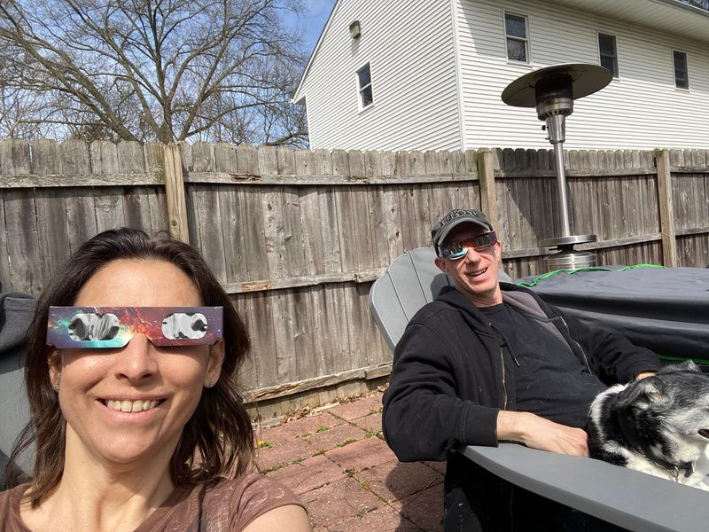

Mobile uploads
Rocky and I have an ongoing conversation about feeling like you are special versus realizing you are just ordinary and not special at all.
There is an interesting phenomenon called the “above-average effect” which is the tendency of most people to believe they are above average, despite the obvious math contradiction that introduces. There is also a theory that suggests the less skilled you are at doing something, the more likely you are to overestimate your own performance, precisely because you don’t really know how to judge it properly.
Rocky, in all seriousness - if you can imagine it - asked me today if I felt like I was ordained by God to do the work I do with homeless people. It’s an audacious question. “Do you think God picked you out of 8 billion people to be special?”
I literally have people tell me that I am the hands and feet of Jesus. (She likes to remind me of that when I haven’t put the dishes away from the dishwasher.)
Do I think I have been sent a message from the universe that there is clearly a tragic horror show happening on the streets of the richest country in the history of humanity? YES!
Do I think that I’m the only one capable of doing something about it because God made me so preciously special? NO!
My “specialness” is not because I’m unique. I’m special precisely because I’m so ordinary.
How does a person walk past a piece of trash and not pick it up? I can’t do it. But apparently the vast majority of people can. I don’t get that. That doesn’t compute in my databank. So I guess that quirk qualifies me as “special.”
Do you all just look around at obvious things that are wrong and think, “That’s not my job. Someone needs to do something about that.”
And I’m not talking about giving money. Everyone can do something. Being nice and smiling to the cashier at ACME is something I rarely see. What is that about?
Are you so hurt and beaten down that you can’t force yourself to smile and say hello?
I brought up that Black homeless guy that stands with his bicycle and baby cart full of belongings at the corner of West Market and Frank Blvd. I said, “I bet that guy stands at that corner all day and no one acknowledges his presence.” (I know I have never said hello.)
Rocky said, “That’s not true. I drove by him recently and some young woman on a bike had stopped and was talking to him.”
That woman on the bike is special. She is special not because she is some angel sent by God to spread goodness and positivity through the world. She is special because she’s just some regular person who took 5 minutes to stop and say hello to someone on the street.
Being special is being ordinary but stepping out of your lane to do something good. Anyone can be special. That’s the irony. Most people just choose not to do it.